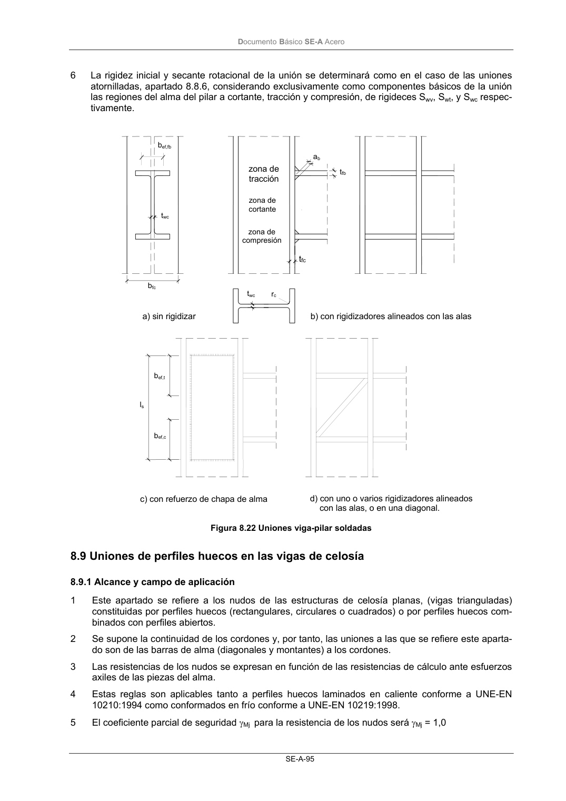
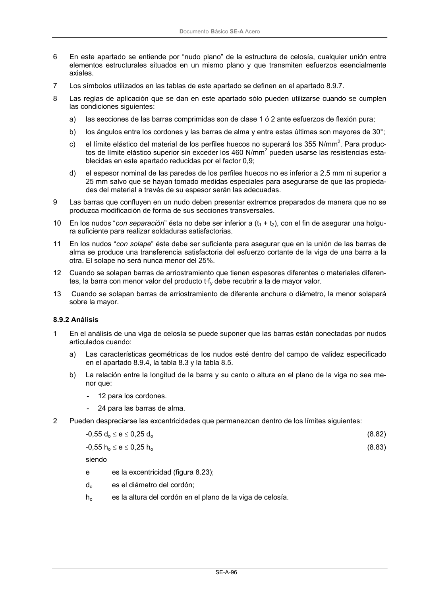

DB-SE-A · Fragmento de PDF p97 · versión 2007-10-23 · capa oficial
Formatos: JSON compacto · Markdown · PDF fuente
Ámbito del documento · texto del ámbito · documento y tablas
ID técnico a0136 · PDF pág. 97-98 · jerarquía no validada por persona · no es capítulo: sin_linea_de_encabezado · padre: raíz · literal original en el contenido: «8.9 Uniones de perfiles huecos en las vigas de celosía 8.9.1 Alcance y campo de aplicación»
8.9 Uniones de perfiles huecos en las vigas de celosía 8.9.1 Alcance y campo de aplicación 8.9.1 Alcance y campo de aplicación 1 Este apartado se refiere a los nudos de las estructuras de celosía planas, (vigas trianguladas) constituidas por perfiles huecos (rectangulares, circulares o cuadrados) o por perfiles huecos com- binados con perfiles abiertos. 2 Se supone la continuidad de los cordones y, por tanto, las uniones a las que se refiere este aparta- do son de las barras de alma (diagonales y montantes) a los cordones. 3 Las resistencias de los nudos se expresan en función de las resistencias de cálculo ante esfuerzos axiles de las piezas del alma. 4 Estas reglas son aplicables tanto a perfiles huecos laminados en caliente conforme a UNE-EN 10210:1994 como conformados en frío conforme a UNE-EN 10219:1998. 5 El coeficiente parcial de seguridad γMj para la resistencia de los nudos será γMj = 1,0 zona de cortante zona de compresión zona de tracción a) sin rigidizar b) con rigidizadores alineados con las alas twc bfc tfc tfb ab twc rc bef,fb bef,t bef,c ls c) con refuerzo de chapa de alma d) con uno o varios rigidizadores alineados con las alas, o en una diagonal. DocumentoBásico SE-A Acero SE-A-96 6 En este apartado se entiende por “nudo plano” de la estructura de celosía, cualquier unión entre elementos estructurales situados en un mismo plano y que transmiten esfuerzos esencialmente axiales. 7 Los símbolos utilizados en las tablas de este apartado se definen en el apartado 8.9.7. 8 Las reglas de aplicación que se dan en este apartado sólo pueden utilizarse cuando se cumplen las condiciones siguientes: a) las secciones de las barras comprimidas son de clase 1 ó 2 ante esfuerzos de flexión pura; b) los ángulos entre los cordones y las barras de alma y entre estas últimas son mayores de 30°; c) el límite elástico del material de los perfiles huecos no superará los 355 N/mm2. Para produc- tos de límite elástico superior sin exceder los 460 N/mm2 pueden usarse las resistencias esta- blecidas en este apartado reducidas por el factor 0,9; d) el espesor nominal de las paredes de los perfiles huecos no es inferior a 2,5 mm ni superior a 25 mm salvo que se hayan tomado medidas especiales para asegurarse de que las propieda- des del material a través de su espesor serán las adecuadas. 9 Las barras que confluyen en un nudo deben presentar extremos preparados de manera que no se produzca modificación de forma de sus secciones transversales. 10 En los nudos “con separación” ésta no debe ser inferior a (t1 + t2), con el fin de asegurar una holgu- ra suficiente para realizar soldaduras satisfactorias. 11 En los nudos “con solape” éste debe ser suficiente para asegurar que en la unión de las barras de alma se produce una transferencia satisfactoria del esfuerzo cortante de la viga de una barra a la otra. El solape no será nunca menor del 25%. 12 Cuando se solapan barras de arriostramiento que tienen espesores diferentes o materiales diferen- tes, la barra con menor valor del producto t·fy debe recubrir a la de mayor valor. 13 Cuando se solapan barras de arriostramiento de diferente anchura o diámetro, la menor solapará sobre la mayor.


PDF fuente redistribuible: copia fiel enlazada en esta página (SHA256 verificado).